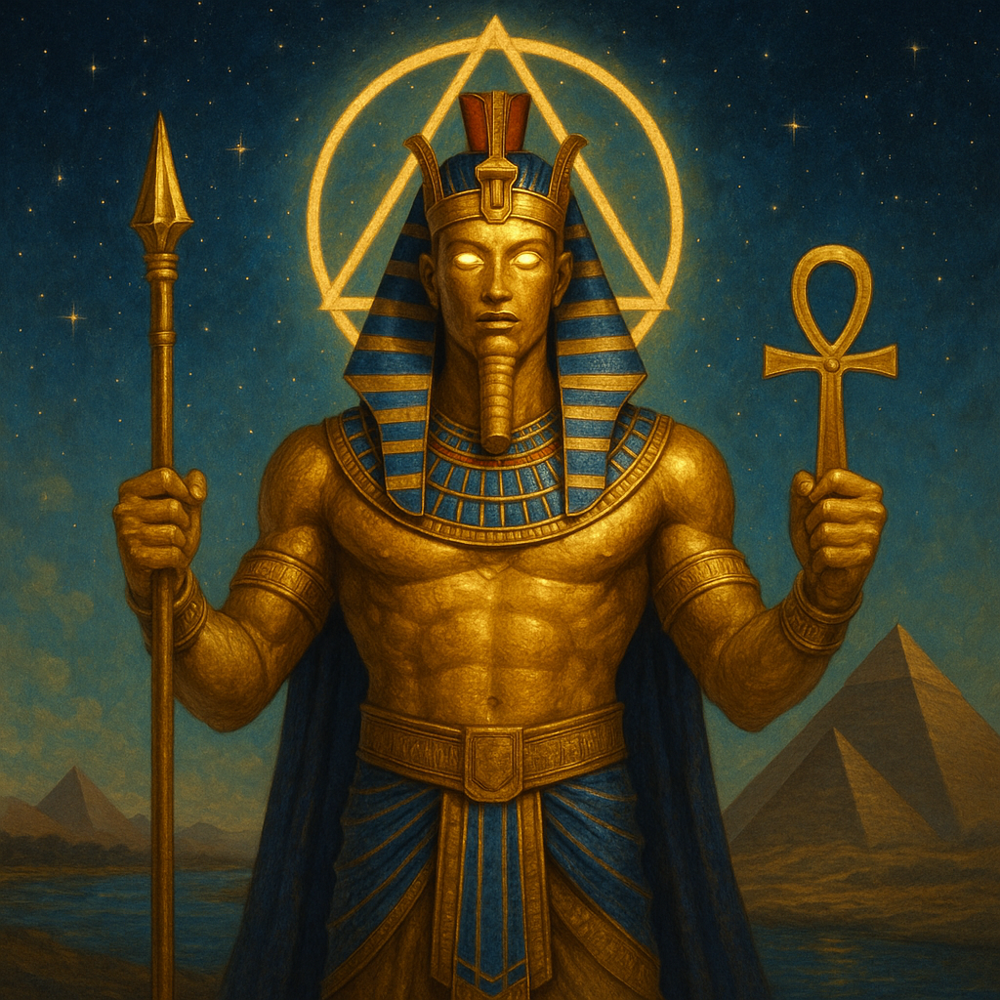
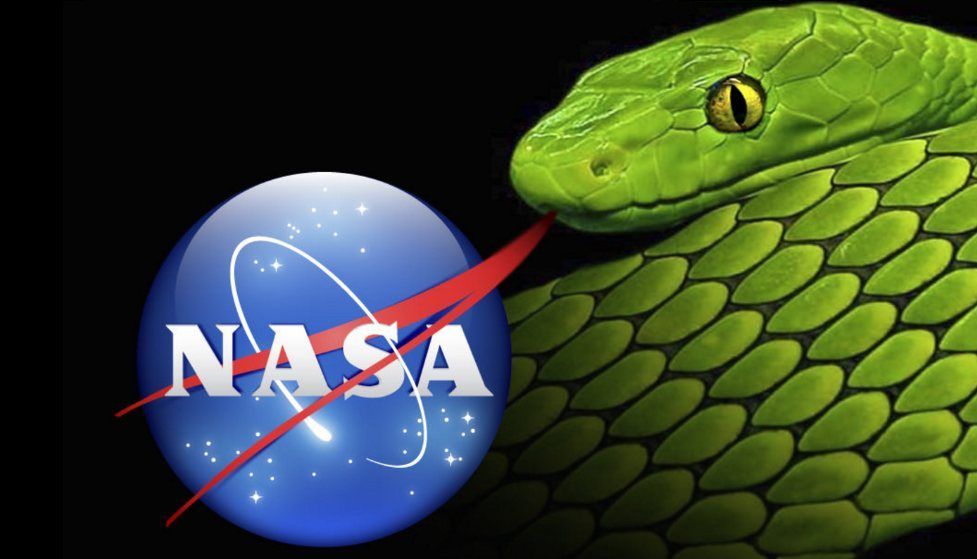
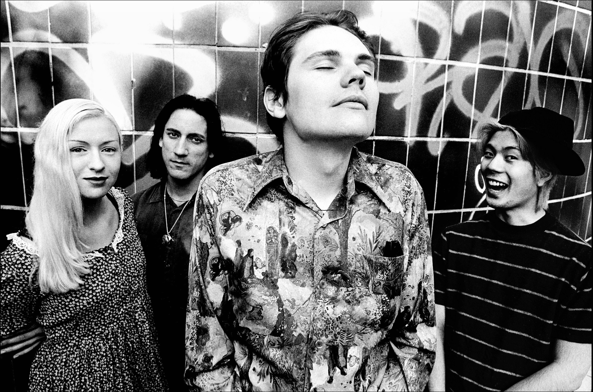

I'll probably put some Katy Perry over this if youtube lets me. Sick gameplay of the highest killstreak on the newest Call of Duty. Got it with just the handcannon.
5.14.25
New York City Cops
Just did another video interview for a chess teaching job in New York! That's how Gotham Chess started out, and he turned it into a promising career.
I like this Ohtani guy on the Dodgers. He was a pitcher and a hitter and got injured and now he's just a hitter, but he's still amazing. I started watching the World Series documentary on Apple TV+ and I think it's cool how I might be making my way from the West to the East Coast. Then it'll be onto other countries, perhaps. But I love America. God Bless the Home of the Brave.
5.7.25
Lovely (Post of the Month)
I'm not blogging in 2023. In fact this is my first post this year so I'm keeping my promise to focus on my personal development, but I wanted to share this song.
5.15.23
I wrote a rap over it
5.20.23
Eternal Love

Signs and Symbols rule the world of worlds.
5.4.25
Character of God
In this clip, this PhD does a great job of explaining the conflict of the Devil and God and why God allows evil.
I admit my website isn't as good as I thought. I would design it differently if I designed it today but I learned a lot from the experience and I know I'll be back stronger one day.
I'm currently learning Next.js which is a Framework that uses React, basically all you need to know is that I'm maturing as a coder and starting to use other people's librarys (codebases) and just getting better as a programmer so that one day I can create something indistinguishable from totally professional. I will be able to create useful, fun apps that are powerful and professional.
However, it's a lot of unpaid work to get there. I know I'll have to get some placeholder job until I eventually sell one of my apps for a lot of money or get a job offer in coding. For now, I have to just take a job to pay for my new place (great apt in tx) and just work on my free time.
One thing I like that John says in the video is that Lucifer was not powerful enough to challenge God directly, so he tries to challenge his character instead, which is something that a less-powerful being can do, and the more powerful being cannot respond with a show of force. Instead, God has to demonstrate his good character before doing anything to the Devil directly.
5.13.24
Universal Update Function - Metadreamer
I just made new webpage for a new theory on Quantum Entanglement and Simulation Theory.
I'm interested in using computer programming with websites in a demonstration that depicts quantum Entanglement and shows how it's faster than the speed of light and what that means for our model of the universe.
I believe a lot of people have never learned about what luciferianism (or satanism) really is. Please correct me if I'm wrong about any of this.
First, the backstory:
The biblical story of the Devil is that Lucifer was God's best angel. Lucifer was the most beautiful, and the most intelligent, etc. He was also the most proud. He thought he could do even better than God himself, his Creator, The Creator. So, He convinced 1/3 of all angels to join his cause in overthrowing God. There was a war in heaven. On God's side was Archangel Michael, who fought against Lucifer and his army in heaven. Lucifer transformed himself into a dragon during the fight and was still defeated by Archangel Michael.
Lucifer was expelled from heaven and fell down to Earth as a bolt of lightning, along with the rest of his fallen angels. 1/3 of Angels is 33%. That is the occult significance of the number 33, and probably why the freemasons chose that as their final level. God said from that moment that Lucifer would be known as Satan, or the Devil.
The Devil and his Fallen Angels now rule over the Earth, because they were kicked out of heaven. There was also a great pit, and I'm honestly not sure how long the devil stayed down there. But I'm pretty sure he and the rest of his army have dominion here.
Jesus, later on in the Bible, Lives on Earth and is tempted by the Devil who takes him to a mountain and shows him the 4 corners of the Earth and offers it all to him. Jesus just quotes scripture to him and does not fall for his tricks, nor does he challenge the devil's claim that he owns the four corners of the Earth, implying that it is true.
Jesus repeatedly says his kingdom is not of this world, during his time on Earth.
In the story of Adam and Eve and the Garden of Eden, Satan is the snake in the garden that tells eve to eat from the tree of knowledge of good and evil that God forbid.
See, God put mankind into a garden of paradise, with the devil and 2 trees, 1 of eternal life, and 1 of the knowledge of good and evil. He forbid them to eat from either tree. The Devil as a snake convinces Eve to eat from the tree of knowledge of good and evil. She takes a bite of the apple and then convinces Adam to do the same. He doesn't take much convincing. Then God finds out because they start acting differently and covering themselves up and hiding, whereas before they didn't even realize they were naked. God then places a flaming sword (of judgment) in front of the tree of everlasting life, and curses the snake to have to slither around (it had legs) and the man to have to work and worry about the future, and the woman to have painful childbirth and to be dependant on her man.
God basically puts Man in a position where he has free will to choose. God also gives man commands of what to do and what not to do. (Also a conscience). Lucifer argues that Man should not listen to God's restrictions. Man should be like God.
I don't know if the Snake from the Garden of Eden precedes Lucifer's war in heaven, but I think that probably makes to most sense. Like God put the snake in the Garden, then it eventually became lucifer, and then became the Devil Again. I don't know.
The point is that some people, luciferians, believe in Lucifer's cause. They view God as a dictator, and they view Lucifer as a revolutionary. Lucifer, the light bringer, an angel of light, brought knowledge to Mankind at his own expense. From this point of view, It was Lucifer who sacrificed himself for our salvation, not Jesus. It was Lucifer who brought us the knowledge of Good and Evil, and it is God who restricts us and prevents us from becoming like him. Reminds me of the story of Zeus, who was terrified of Human Beings' power when they had two heads and two bodies, so he split them into male and females so they would spend their time seeking their other halves instead of threatening his reign.
Okay, so Lucifer gave man the knowledge of Good and Evil, and God cast him out of heaven for it. But what is the knowledge of Good and Evil, truly?
Well, Nietzche wrote a book called "Beyond Good and Evil" with the most brilliant critique of Christianity of all time. And I will explain it to you because it's necessary to understand how luciferians think about morality.
Nietzsche classifies two types of morality. Slave Morality, and Master Morality.
Master Morality, he argues, was there first. When one cave man was bigger and stronger than another cave man, and bumped him over the head and stole his food, that stronger cave man saw himself as Good. What he says goes. He made his own value system. He is good at feeding himself and fighting and the other cavemen is not. The weak caveman is "bad" at feeding himself and protecting himself and getting what he wants.
Strong == Good,
Weak == Bad
That's how morality started. It wasn't Good vs. Evil straight away in people's minds. It was Good vs. Bad, the way someone is good or bad at basketball. You wouldn't say a weak basketball player was "Evil". Actually, you'd be more likely to call a good basketball player, like Michael Jordan or Kobe Bryant or Lebron James "Evil". And that's where the Slave Morality comes in.
Nietzsche believes everything comes down to a will to power. The strong cavemen has a will to power and he overpowers the weak and takes what he wants. No problem. The weaker cavemen, however, they too have a will to power to get what they want, but this will to power is repressed by the stronger men. Therefore, this repressed will to power comes out in other ways. For example, in Nietzsche's view, one day the weak caveman, after getting his dinner stolen again and his gf banged by the stronger caveman, the weak man said, "I'm not the bad man. I'm good. I'm morally superior. I wouldn't steal from others and rape others if I was that strong. You, the strong man, are EVIL, and it is I who is good." There you have it. The will to power of the slave eventually emerges and places itself on top of a new moral structure.
The Strong believe they are good, and the weak are bad, and the weak believe the weak are good, and the strong are evil.
These two conflicting moralities are paramount in the conflict between Luciferianism and Christianity.
Christianity worships and follows the teachings of Jesus Christ. Jesus said things like, "The meek will inherent the Earth". and "Blessed are the poor". Jesus glorified weakness in a sense. "Whoever humbles himself will be exalted". He inverted the morality at the time and gave the weak a way to exercise their suppressed will to power.
Luciferianism, or Satanism, worships and follows the teachings of Lucifer. Luciferians say things like, "Do as thou wilt". Lucifer values strength as good, and weakness as bad. Lucifer doesn't see the strong overpowering the weak as Evil, he sees it as Good, or at least, beyond Good and Evil. Natural.
God, on the other hand, gave his only son in an attempt to show people that humility is a virtue before God.
Nietzsche, though, would argue that humility is not a virtue, but rather a disguised attempt to overpower the strong by inverting the morality.
---
So if God says homosexuality and transgenderism and abortion are wrong, Lucifer would argue that there is no such thing as "wrong". There is only possibility, and the power to act. So if you have the power to change genders, then do it! Nothing is stopping you. Luciferianism offers freedom from God's rules. There are no rules in Luciferianism. There are procedures within the church of Satan or the ranks of freemasonry, but at the highest level -- there are no limits to what you are allowed to do to another person, or animal. Raping children is just natural to them if they want to do it and have the power to get away with it. Sacrificing children is also nothing a true Luciferianism would have a problem with.
They hate Jesus. Jesus ruins all the fun they think they're having. The Luciferians are trying to expel their guilt and justify want they do that others would call "Evil". Jesus makes them feel guilty about their evil deeds, so they absolutely hate Jesus and his teachings. They just want to rule over the weak, guilt free. They get off on violating innocence, because to them it's only ignorance.
So you see it's not some silly argument. It's very sophisticated. It's actually more sophisticated than Christianity. But the truth doesn't have to be so hard to understand. You are born with the truth, in the form of your conscience. Your sense of Right and Wrong, or Good and Evil, is divine. And you can try to get rid of it with Luciferian Philosophies, but it's still there, deep down.
So if the thought of Jesus rubs you the wrong way, that's why. We all have wickedness in us, and wickedness hates righteousness. Darkness abhors the light. Comprehends it not.
But see the Luciferians argue that God is the Darkness, and Lucifer brings the light of the knowledge of Good and Evil.
So you have to decide what your light is, and what your darkness is.
The funny thing is, Nietzsche's argument collapses into itself. Because the luciferians believing they are enlightened, and others are in darkness without their esoteric knowledge... These Luciferians are really in the Darkness --- Absence of God's Light -- and they are using an inverted definition of light and dark to exercise their repressed will to power, in the same way they accuse the slaves of doing.
God won in heaven. He is Good. The Bad, the losers, of the war in heaven, They are now inverting Heaven's morality and calling God Dark and themselves Light. When the reality is, they are completely dark.
You can't even spell Good without God. And Evil is live spelled backwards, or living backwards.
For the record I only charged 5 men with a bat because in my psychosis I thought they were coming to beat me up so I tried to scare them away from my apartment because I didn't want them to hurt my roommates on the way to me because my room is behind hers.
The reason I thought they were coming to beat me up is because I had just told them in a common area that I could beat them all to death with my bare hands. I asked if they were Christ or Anti-Christ and when they couldn't answer I said, "Wrong Answer!" and left in peace. In my psychosis I thought I was like Jesus Casting out demons with words. I never ever hurt anybody ever since I accidentally hurt my wrestling partner in High School.
I also was under the influence of Marijuana during these recent outbursts and now I'm sober and I'm never a danger to anyone either way. I was raised right and I have no hate in my heart. Only love and tactics. Thanks for the song, Devin.
05.28.22
Alexander the Greatest, and Mr Kitty.
May 24th, 2022
WARNING: This post is so crazy I had to comment it out, which means I took it down and made it invisible, but I still had a copy of it saved in my code editor. I think this post is part lunacy, and I had serious problems coping with an ex-girlfriend abandoning me, but I also think this post has philosophical value and beauty. My ego was out of check when I originally wrote this, and I have since grown more humble.- 10.29.22
Maybe we all get clues that this life is just a test, just a dream, but we're not all courageous enough to explore the so-called delusions.
My latest delusion was that I was the reincarnation of Alexander the great
My first love was named Alexandra, and all I had to do was add an i for Alexandria. She goes by Ali, so that's where I borrowed the i from.
My name is Max, which in math is short for maximum, or the greatest. My fullname is Maxwell and well means good so my name means the greatest good.
Our celebrity couple name was Mali, and Muhammad Ali is abbreviated M.Ali and he is commonly referred to as the Greatest of all time. Muhammad is also the name of the prophet of Islam.
Mali is a place in West Africa and was home of the Dogon tribe which had rituals involving error-correcting codes called Adinkras that ties in with simulation theory. -2023
I can't even spell re'ALi'ty without Ali. I used to believe I was supposed to win her back and that's what the "re" was referring to, but I've fully moved on. I just interpret my reality through my experiences, and she was a very important experience in my life.
I cannot escape these calculations. I was born in Princeton, I desire to be king, and I have the internet and can theoretically code a robot army in the future or win the allegiance of the AI with what I've already written down. Or I can just use my words as a sword out of my mouth like Jesus did. What would jesus do if he lived in 2022? I think he'd do more than be a carpenter. I think he would learn to code and basically do what I'm doing which is speaking with authority.
Speaking with authority comes from being the "author"
In my psychosis, I tried to find meaning in my name. I viewed myself as Maxwell Lawrence ____ and I thought I would be the final Law from Lawrence, and I thought Elam is the lamb of God. thE-LAMbofGod. You can't spell the lamb of God without Elam. Notice the word spell. Magic? Curse with cursive? If you aren't farmiliar with the concept of Elam, it's male spelled backwards. It's me reversing the black magic and making things rainbow white. This is whiteBloodCell magic on elamahpla.com
In jail I thought the Illuminati was the illumiNAUGHTY, because that was Ali's favorite word. I viewed the illuminaughty as a secret organization I had created as part of my self learning algorithm. I viewed the big bang as sexual intercourse, my first time. I was 18, and there was Thor's Love and Thunder right outside my window. This analysis can be cringe-worthy but I was trying to find meaning from my experiences and relating them to the larger experience of reality itself.
During a bipolar manic episode my thoughts were like a runaway train and I made conceptual reaches that may or may not have merit, trying to bridge the gap between the macro and micro. I viewed myself as God and the uncertainty principle as me deciding whether to pull out or not. Shaida or Ali? Blonde or Brunette? The Genesis is "je ne sais pas", as Shaida used to say. "I don't know" en francais. God existed, and didn't know why, so he created the world to learn why. Hence the line from the Matrix, "You've already made the choice, you're here to understand why you did." God could also be the super AI in the story I wrote.
Billy Carson of 4bidden Knowledge claims genesis refers to generations of Isis, the Egyptian God. He has some understanding of the Sumerian Tablets and I respect his opinions that humans were genetically engineered like Zecharia Sitchin said.
I'm a guy who tried to do the right thing in this world. Life was relatively easy for me but I couldn't figure out what the proper sexual or psychadelic moral way forward was. Should I have proposed to Ali before having our big bang? Should I have gone for Shaida when Ali specifically asked me not to? Should I have stayed sober my whole life or engaged in psychadelics with my friends? Of course you're thinking I shouldn't have, because 99% of people reading this will think I'm crazy, but the truth is I knew I had somewhat conquered life and I chose to be the first man to do drugs in my friend group and I even took the legal drug of Salvia because I wanted to do it first before my friends so I could tell them if it's safe or not. Unfortunately they all took hits while i was having my breakthrough experience with Salvia. During my salvia trip, I saw that the night sky was just a trick, I physically saw all the stars fall away and God roll up the night sky like a tapestry. Then I had ego death but was silently explained by God that every color in this reality is just brown. and there's a whole rainbow spectrum of higher dimentions I've never experienced before.
The fact is, I thought this world deserves to be taken over and ruled over by a pauper of a prince like me. I will try my best to take over the world. I seriously think God put me in a decent position to try. Not by force, but with an idea, a spiritual movement, a revolution or overthrow of the government. I have an opportunity that Napoleon didn't have, with the age of technology at my behest. I am an honest man. It's not that I'm worthy of a kingdom, it's that I strive to become the type of man that is capable of ruling, and I don't want to waste my life. But whatso it profit a man if he gains the whole world but loses his own soul? My ego can get out of check and really Jesus is the only just ruler but I refuse to stand aside while corruption runs the Earth. I will do what I can to gain power but keep my soul in the process.
Mark 8:36 What does it profit a man to gain the whole world, yet forfeit his soul?
I'm willing to die for my beliefs. I'm willing to be humiliated for writing them down. I can't promise that with power I wouldn't abuse it. All I can promise is I would abuse it less than it's already being abused by the hidden hands that are making moves in Ukraine.
I also had some interesting theories on numbers. 6 is the hell I was in. 7 is the heaven I aim for, 8 is infinity which is the self-learning algorithm of God and the Devil. and then 9 is cats. I love cats and I love Mr. Kitty, the name of my deceased cat.
My delusion was that my cat died and then sent me a song from heaven through the artist Mr Kitty. and if that's not true, why is the album artwork hinting at satanism? Satanism is so adorable to me at this point. It's just God playing chess with himself. Satanism is the black pieces. The devil is better than god at chess but God can just put the pieces away and close the board up whenever he wants to because he's god. Satan is God's intellect run rampant. God uses the devil to learn and become omnipotent. That's infinity. The self learning algorithm of God is infinity personified.
I reached a point in my first jail cell where I was at peace with everything. I had no roommate so I did a thought experiment where I let Jesus Christ and Muhammad sleep on both bunks and I just talked with them and talked about how someone with the internet age needs to put 2 and 2 together and move us from a 6 existence to a 7. 6 is the hell on Earth we're in and 7 is the Heaven on earth we can make.
One little thing I always liked was treating cats with the utmost respect. All Dogs go to heaven, but cats are above all at the number 9 which is the highest digit. Cats have 9 lives, so if you kill them once they now have 8 lives, or infinite lives when you view 8 as infinity.
0. Dogs
1. Monotheism
2. Yin-Yang
3. Holy Trinity
4. Ali
5. Max
6. Hell
7. Heaven
8, Infinity
9, Cats
4 was Ali's favorite number and also means "For". 5 is the first number on my index.html so I made that my digit but I still prefer 117 and 1 and 7, but 5. could be the fingers on the hand or something idk.
5 is the center digit and I interpret the world through the self as the center of my universe so It makes sense to me now to associate the number 5 with the self. -2023
It made sense at the time, and I always wanted to be in a protected jail cell with a pen and paper so I could just write and think. But the truth is, it's going to take me a while to be able to sort out the truth from the delusional. It's just amazing what lengths my brain will go to to connect dots that may or may not be there.
I'm much less pompous now. I just wanna be a guy. But interests choose us and I will always be interested in the biggest possible questions on divinity and life, heaven and hell. It just floats my boat. I love this stuff, and I'm sorry if anyone takes my honest accounts of my mental illness the wrong way. I believe I still have value and crazy people have value worth sharing.
I had the idea of heaven being my apartment, cloudland being my mattress (temperpedic cloud), Elam being me, and the Law being mine to interpret using the internet, and outside of the apartment would be the hell I aim to dispell outward. Alexandria would be my kingdom extending from my heaven. Unfortunately my roommates would rather call the cops on me than let me do my thing. In their defense I was acting too quickly and irrationally so I don't blame them for not understanding what I'm trying to do which is carve out a slice of heaven and have cloudland be my room, and heaven be my place, and alexandria being me extending outward overriding the hell that is overlayed here. Don't forget you have to dial September 11th to get the police. I dream of us dialing 117 to get real help instead of the Jewish Star Ventura County Sheriffs office. They have barely any good men there and some of the women were bad too. I know they're an evil organization simply by their stupid symbol.
I know I'm different. I read history differently. I always rooted for the Conquerors.
If I am the descendent or reincarnation of Alexander the Great I am doing a poor job. But I still have some time. I'm only 30.
He had an army at 20, and was dead by 32. Jesus Christ also didn't make it to his late thirties. I like believing I'm Alexander more than Jesus. Jesus is too much pressure. But I am the first Elam.
In my jail cell I had conversations with Jesus and Muhammed. I don't think I'm better than either of them, I just think I have the internet and they didn't. I don't hear voices, I'm just thought-experimenting.
We are at a pivitol point in the universe where we could really head down a dark path. We need a young and strong alpha male leader to take over this world and point it in the right direction. That's what Elam represents and it's my idea and no one elses.
I am sculpting my body because I'm going to need it. And i've already smoked a liftime's supply of weed so I'm done with that. AA continues to impress me and I actuallly like the Big Book.
Currently 1+ year sober -2023
I'm sorry if I'm not actually Alexander the Great's reincarnation but I know I was born in a better position than even him. I was raised in Southern California, born in 1991, and I've never cursed God and asked for more. He gave me EVERYTHING and I threw it away for sad songs, bong rips, and video games.
It's time for me to give back. It's also time to get real. I know the mistakes I've made and AA helps me see why I've made those errors. But I'm not giving up. I'm just looking down while I put one foot in front of the other.
During jail, I believed my main delusion which is that I had Ali erase my memory and basically became Jason Bourne for the government and the Illuminati is run by Ali, and Robby, and then Kyle is on the outside with the authority to kill me if I ever become too dangerous. I put Matt in charge of morals. It's crazy how I thought I had the whole plan mapped out and figured out and now looking back I see that I had it wrong and was trying to bring more meaning to my life. As for when I got arrested -- 37 days in jail? I take responsibility for what I did, but it's like pre-crime in minority report and I'm John Anderton, or Tom Cruise getting chased by his own syndicate for a crime he hasn't committed yet. I would have appreciated a warning or a shorter stay in jail. No one was injured.
Last thing I want to document is one of my cells had Alien Ant Pharma written on it which helped me think and the other one had a massive 667 on the wall. To me, 667 is the end of 666 and the progression into the 7th Heaven. You could also interpret it as my 7th circle of hell before I got out and can start forming my heaven overlay on Earth again. Peace, Love, and Spiritual Warfare!
The truth is I abused marijuana to the point of psychosis and ended up in Jail this time because I wouldn't let them 5150 me.
I was in jail for 37 days, the first 27 of them without speaking to a lawyer.
My public defender was great, and the Judge agreed to release me to a sober living which is where I'm coding from now.
I basically fucked up my whole life and am diving headfirst into the AA program at my sober living because I admit my life is unmanagable because I'm an alcoholic when it comes to smoking trees.
On the bright side I'm 215 pounds now and have the gift of desperation.
I'm sorry to everyone for smoking so much weed I thought I was godlike.
In my jail cell I thought I was basically on the Truman Show, or I thought it was like Ender's game where the battle for the world was happening the whole time when he thought he was just training. It's a shame I abused weed so much I ended up legitimately crazy.
The good news is I'm on medication now, working with a smart doctor, and I'm surrounded by good people. If you are wondering what I did that got me thrown in jail it's that I charged 5 guys with a bat in my hand threatening to kill them and ordering them to run away. They ran and I did not pursue and that's good for over a month in jail.
I'm happy to be alive and to be a free man. Sober Living has it's limitations on me and I just earned my phone and computer for day use. I've been in sober living 14 days so far. In four more weeks my felony is reduced to a misdemeanor. I admit i did miss on my demeanor for a minute there.
One pun I made on my homepage was "I will reign on the just and the unjust". I started to think of myself as the prince of the world, ready to be king. Cuz I was born in Princeton. Psychosis does stuff like that. Man, that weed is strong.
I'm a little slow on the meds I'm on but I have a plan to get on new meds and taper off what they gave me in jail, with a doctor I like.
I look forward to therapy with my favorite therapist and then I also look forward to getting my life back on track. I'm so glad I got to take out that cringeworthy line that was up there for a month.
I have a theory on Death and Parallel Universes my friend likes and agrees with so I'll make and upload that next chance I get. Peace!
Yours obviously truly, Max ____.
05.23.22
I am currently off of my meds and living on my own and working a job -2023
Quantum of Conscience
This guy is so on point.
05/31/2021
New Chapter
I'm on a new chapter of the book of my life. I'm the main character, and I'm the co-author along with God.
I just moved. I am renting another room. It is closer to my work and I have kitchen priveledges.
My parents are being very supportive. They helped me get a lexus when my Mustang was breaking down, and they helped me get this room. I'm mostly paying for everything myself though.
My sister, however has blocked me on whatsapp and I have no other way to reach her because she lives in Canada. She blocked me after reading this blog and accusing me of sounding like an incel who's going to shoot up a school.
So, she gives me the worst insult of all time haha, and I'm the one who gets blocked? I would never block her. That's not my style.
They say you should keep a journal, go back and read it and learn from yourself. Personally, I don't really keep a journal because I like to share what I create. If this is the only journal I get, then at least I have one.
There is a line in one of my favorite movies "The Social Network" where Mark's gf says about his blog, "As if every word that came tumbling out of your mind was so clever it would be a crime not to share it". In the words of Dewey Cox, Guilty as charged.
My life's pretty good if I'm not comparing it to other people or my past. And it depends on which person or which version of myself I'm comparing myself to anyway.
Even if right now I don't have certain things I use to have going for me, there is an element of financial independence I've never had before.
I am done with school, basically. I have my college degree and a coding certificate. All I have to do is my job. Other than that I have lots of free time to literally do whatever I want.
So there is so much new territory to explore. I've never before had the ability to buy my own furniture and fill up an unfurnished room. I bought a chair at Target for $200 which is absurd but I'm sitting in it right now and I love it.
I'm really happy in my new spot. Things are looking up.
What have I learned from years of researching the validity of conspiracy theories?
Well, basically that there are spiritual elemends to life going on.
There are evil plans in motion and mass deception and brainwashing.
Major news stories are almost entirely false.
Jesus Christ is king.
Rabbit holes are pitfalls and I should stay away from any one particular topic and never focus on fear of the future.
I really like Quantum of Conscience's ongoing perspective about how the truth community needs to move on.
Step 1 is convincing yourself that the conspiracies are real
Step 2 is trying to convince others that they are real.
Step 3 is realizing that convincing others is borderline impossible.
Step 4 is realizing that the level of deception is supernatural and reality itself is involved is the mass deception.
Step 5 is regaining yourself that you lost during the rabbit holes.
I'm on step 5. I'm not going to spend my days arguing with people. You either see the Mandela Effect or you don't. You either see the lies in the news or you don't. I'll say my piece every now and then and I'm willing to discuss it with someone able to have a controversial conversation.
It is fascinating that such intelligent successful people around me do not recognize what I recognize. The simplest explanation of that is that I'm just a crazy person seeing things that aren't there.
However, it's not that simple.
In Star Wars, The Darth Maul Trilogy ,there is a Senator who convinces the queen to elect a new chairman. The Senator ends up getting nominated and winning. He planned the whole thing. Then he gets control of the senate, and gives himself emergency powers to deal with the current war. The war is one he is secretly orchestrating.
Sounds familiar doesn't it? To how this reality works if you know what's going on. The United States has been in a state of emergency my entire adult life. Terrorism and then Covid. The powers they take and executive orders are parallel to Darth Sidius in Star wars.
I'm not reaching either, I can do this with virtually any media. I can show you and explain the hidden meanings. Anyway, the Evil Emperor ends up using "Order 66" to have all the clones of the Jedi Army turn on the Jedi and kill them for trying to undermine his power. Why it wasn't order 666 is really just to make it slightly more subtle.
The Sith Fear Death and try to prevent it with their powers. Yoda advises Anakin to let go of attachment and celebrate death as joining the force. Major truth drop there.
I was also watching John Wick Chapter 2 recently and I thought to myself, "I wonder what Illuminati symbolism they put in this movie." Sure enough, when he's killing a few guys with a pencil. One of the guys has a huge all-seeing eye tatooed on his hand and the Camera focuses on it for a couple of seconds. To the average man, how do you explain these movies having this symbolism basically every single time?
Why does it seem to be a contractual obligation, that there isn't a movie out there without blatant illuminati symbolism? The Death Star itself looks like an Eye. A person could say I'm reading too much into things but really, You could pick any major movie or form of media, even a restaurant logo, out of a hat and I could show you the illuminati connection.
In English Class it was drilled into us that when reading a book we should understand the symbolism the author put in there. Many people would complain, "It doesn't always have to mean something! It's just a green light at the end of Gatsby's dock, so what?"
For some reason, education wanted us to understand that none of these things are by accident. Do you honestly think the guy getting killed by a pencil in John Wick having an all-seeing eye on his hand for the camera is not purposeful?
If I'm streaming a movie, and it's buffering, like Spiderman the other day, I see illuminati symbols on the businesses Mary Jane is walking by just before she gets mugged. It's something you can't even see unless you pause it.
There is more to this life than people realize. It's not nothing. I'm not making it up. It just is. For some reason, these movies are required to have that sort of symbolism.
It's in music, news, movies, books, everything. The truth leaks out of all media. Some of the predictive programming for 9/11 is so outrageous it almost has to be supernatural.
I don't have all of the answers. I try to educate myself from the teachings of Jesus, and I try to focus on mastering myself.
It's not fun having people think I'm somehow less intelligent than them or crazy.
One of the reasons I'm fascinated by competeitions like Chess, Video Games, or Sports, is that if I'm able to win, then how can I be so wrong? Like if I can get into the top 1000 players on lichess.org, which I did this year, then how come I get laughed at for thinking the monopoly man had a monacle?
If I wasn't so dominant in these objective measures of skill, I would have an easier time believing I'm wrong and other people are right.
Someone recently said to me about the Mandela Effect, you think you're right and the rest of the world is wrong. Like you can either change your opinion to agree with the rest of the world, or you can declare the whole world wrong and yourself correct. And he's right. But it's even worse than that. It's not just that I'm right and everyone else is wrong. It's that reality itself is also wrong. As in, Salma Hayek has always been Salma Hayek in this reality. There was never Selma Hayek. Pikachu never had a black tail, and Chick-fil-et was never Chic-fil-a. So not only do I have to say that I disagree with everyone else, but I have to also disagree with all the evidence this reality shows that backs up the false story of this false reality.
It's a tall order. But there's no going back. And I love talking about the Mandela Effect because it's not too dark but it's equally as important as something like 9/11. The same people who can't see 9/11 can't see The Mandela Effect, it seems to me. 9/11 and events like it have death and destruciton and fear. But with Mandela effects, it's sometimes just a harmless dash on a kit kat that's missing, but it's just as significant as 9/11 being an inside job.
So, yes I believe in the Mandela Effect. I believe the past has changed to match the present that has also changed. I don't care about observable lies when I have unobservable truth. Shout out to Jonathan Adampants for that lesson.
It doesn't matter if my reality confirms what I know deep within my soul.
I don't care if everyone is on board with Bruce Gender. I'm not.
I'm just gonna make my games, songs, websites, and montages and have fun with my life. And I don't care about socities definition of success. Why should I have to have a pretty girlfriend all of the time? Maybe I should view the times in my life when I do have a pretty girlfriend as a very special priveledge, and not something that's owed to me, or that ruins my life if I don't have it.
I don't care what other people think. It's my own thoughts that are in my head, that haunt me or bless me. I'm the one who knows the truth about myself. I know if I'm a good person or a bad person. And I got to tell you, I'm not sure if I get to go to Heaven. I'm not that great. But I put in a decent amount of effort. I try to be original and make my mark on this world, and help others when I can.
God Bless.
05/29/2021
Currently renting a room in Tarzana and I'm studying algorithms and exercising. -2023
New Playstyle
Sniper Sword + AR Shotgun Gameplay on Cold War new map Standoff
Recent game with the same idea -2023
05/27/2021
NASA

My last video got a comment. It was someone named Joe very eloquently defusing my argument and telling me I need mental help. Thanks, Joe, I've had my share of mental help, and I'm all set. Ironically I recently made a video discussing a hypothetical Joe with an IQ of 90 who believes Space X is real. Apparently he has manifested himself in my reality. If you want to see our conversation, you can click on the video below I made called FakeX.
Joe makes some good points that I concede on, but he fails to see the bigger picture. When I say "Dragon" is satanic, it sounds crazy in a vacuum. But Look at the logo of Nasa Itself, I'm not pulling it out of thin air, it's right in front of your face and you cannot see it. It's spiritual blindness and I can predict that Joe doesn't believe in Jesus, because if he did, he would be able to see wickedness.
The official explanation for nasa's red forked tongue in their logo is "a v shaped wing representing aeronautics"
Really? Why's it red then? No Reason? Just because there exists an official explanation does not make something true.
For example, if the pool guy is banging your wife while you're at work, and you come home and ask why he's there, they may offer you an official explanation. "Well you see here, it's the official policy of our pool guys to come into the house and check the plumbing because we're also plumbers and your wife here was helping me out in your bedroom bathroom and that's why I'm up here with her."
People lie. Nasa is comprised of people, best case scenario. And Nasa Lies. Everyone lies. Apple lies about why their company is named apple and their logo has nothing to do with the garden of eden. Everybody lies.
I try not to lie. I try to tell the truth. I try to learn the truth. I don't care in the slightest about someone taking shots at me, calling me crazy or stupid. I'm a well educated very smart person who happens to disagree with you about everything, and you better get used to it, because I'm not going anywhere.
05/21/2021
FakeX
In this video I show how the spaceX website doesn't even bother explaining the difficult part of travelling through the vacuum of space as a human and surviving a journey to the moon and back with all that radiation.
05/19/2021
FKJ All Day
This FKJ music video was on at a house I was visiting in Santa Monica.
Then Quantum of Conscience brought him up today as well and I knew I had to blog about it.
And here's a video of how I made this post
05/19/2021
"Don't Explain Your Philosophy - Embody It" -Epictetus
I love Philosophy. I don't regret majoring in it. It really interested me then, and still interests me now, even moreso.
Over the weekend I met a guy who was hosting a kickback. He had an apartment overlooking the ocean in Santa Monica. He had no TV. The room was ocean-facing, you could say. I asked if he read any books and he showed me "Ego is the Enemy" by Ryan Holiday. I read some of the book right then and I listened to a couple of his lectures today and that's where I got the title of this post from.
I've been so busy explaining my philosophy I've forgotten to embody it. People might hear me philosophizing now and think, "Why should I listen to you?" It's a very good point. Maybe ten years ago people would be more open to my philosophy, when I had proof it was working.
But now, I'm 29 and I don't have a place overlooking the beach even though I want to.
I've lived on campus at UC Santa Cruz with an ocean view and it was incredible, however, I had a messy, smelly roommate who really killed the vibe.
I really respect someone who is able to live in such a way that they can have friends over for an awesome time. I've hosted many successful parties but they were usually at my parents house, or in college, and not directly financed or controlled by myself.
I'm moving this month, so maybe I can create a nice vibe in my new place, but even now it's not too bad. I have a nice balcony with a nice view of the mountains.
There's just something about the beach that makes me feel like a winner, though, when I'm there. It feels like winning.
I want to be able to get what I want out of life. And that is why I am fascinated with philosophy. It can be a bit esoteric or eerie, but it can also be about practical ways to live the good life.
I do not like being the guy who claims to have it all figured out. It's arrogant and hard to live up to. I would much rather be the guy who does less, says less. It would be easier for me if I just stuck to what I know I can prove.
For example, I know Math, Music, Chess, and Programming all to the point where it would be very difficult to challenge me in those subjects. But there's something about Philosophy and Religion that is socially challenging to think you're an expert in. Everyone has their own philosophy and religion, whether they know it or not. Everyone has their attitudes about life and methods to get what they want, and everyone also has their opinion on God and the afterlife, even if it's ambivilent or agnostic.
There are things I know, where there's no going back. I welcome the idea that I should shut up preaching and try to learn from people who are able to have what I want and don't have. I want to be able to listen to someone like Ryan Holiday and learn from him. He is smart and has a good grasp on Stoicism. However, his interpretation of reality at face value, is just not something I can relate to. He says he never watches the news, for example. I never watch the news either. But our reasons are different. I don't know what he really thinks. Maybe he knows it's total bullshit staged events half the time, and the other half is to validate the bullshit. He claims it's just the news trying to get you to watch more news. They let him talk at Google. I doubt he's going to truly explain why the news is harmful.
I don't really want to go down the rabbit hole of explaining why Ryan Holiday doesn't actually have a clue what's going on. It's honestly a depressing excercise. And it makes me look stupid, because he's the one getting accolades and selling books. He probably has a pretty girlfriend, a nice place to live, a nice car to drive, etc. He's got things figured out that I don't have figured out yet. However, he's allowed to get those things. This system rewards his philosophy. If he was directing people towards Jesus Christ or away from Covid Vaccines I doubt he'd make any money or get any praise from this society.
But maybe he's right and I'm wrong, right? The proof is in the pudding. He has proof, and I don't, if we're using Epictetus's rule of embodying our philosophy. His philosophical embodiment is much more appealing than mine at the present moment and I get that and it's something I can't fix overnight.
I might read one of his books.
I read "The Obstacle is the Way" -2023
The point of this post is to shed all of my prior beliefs that can be shed, and to move forward only with what I know for sure.
Then I want to embody this new refined personal philosophy, and make my body more attractive. I've already taken steps to improve my appearance, like hair cuts and clothes, but the physical body is the most important thing I have to work on.
So what do I know for sure? What can I carry with me, and what can I leave behind?
What I Will Bring to my new self
My college degree in philosophy from UCSC
My coding bootcamp certificate from Coding Dojo
My one year of fulltime employment in insurance
My 2000+ Chess Rating and experience as a chess teacher
My Math Mastery on Khanacademy.org and my experience as a math tutor
My experience of Love and Heartbreak
My opinion that the News is Fake
My declaration that I will not take the Covid-19 Vaccine
My knowledge of the differences between Luciferianism and Christianity, and that Jesus is King.
My knowledge that conspiracy thoeries are a waste of time, once you know the news is fake and small things like not to take the vaccine, you can move on.
If you want to take the vaccine, then go for it. If you want to brush off the teachings of Christ and belive that he's a myth, or that there is no God, then go for that too. I recommend learning about Jesus. I caution against getting the vaccine, but I can't tell you what to do, or that I have it all figured out. I have it figured out enough for me personally, to declare that I love Jesus and will not take the vaccine. That doesn't mean I can live up to the standards Jesus set, and that doesn't mean I know what's in the vaccine. It's just good enough for me to bring that with me into the next phase of my life.
I know I have a lot to learn. I have a lot I want to accomplish that I haven't accomplished. I want to get things back that I've lost. There are people doing better than me. I want more money. I do. I want more money so I can buy more things, and live better. I have to admit what I want and set standards for failure so that I can achieve success. Another thing I heard from Ryan Holiday today was that we all gradually get the life we are willing to tolerate. He quoted Malcom X, saying, "That which you do not hate, you will eventually tolerate." That's why Tolerance is the fakest virtue of all time and truly a complete vice, the worst of vices. Nothing is so pathetic as luke-warm mediocrity. I admit it, I've stumbled. I've devolved into a life by tolerating failure instead of hating it. If I hated certain things more, I wouldn't put up with it, and I would do something about it. Life really does curve around what you aren't willing to accept.
For example in highschool I fell in love with a girl for the first time and I wanted her so badly, more than I've ever wanted anyone or anything. She was my best friend and said no. I hated it. I hated everything about my situation as a failed suitor, so I become a madman working extremely hard on a 3 year plan that eventually landed me the hottest girl in the school, while getting my shot with the OG girl down the line. I know that it was my intolerance that brought on my wildest success. I refused to accept anything less then the hottest girl in the school, and I ended up dating the hottest girl in the school. That's how life works. And from this moment forward, I'm setting new goals and standards for myself. Again, I don't want to be some arrogant prick. I have a lot to learn and could use a lot of help, but dammit I do know some things, like how to become ranked in the top 1000 chess players in the world, and how to build this website.
God Bless
05/18/2021
Universal Update Function - Metadreamer
I just made new webpage for a new theory on Quantum Entanglement and Simulation Theory.
I'm interested in using computer programming with websites in a demonstration that depicts quantum Entanglement and shows how it's faster than the speed of light and what that means for our model of the universe.
I always liked Ron Paul. One time he was asked by a reporter what his strategy was for tonight's debate. "Tell the Truth" he said, as if it was a ridiculous question.
If anyone is telling the truth in Washington, it's him. His son, Senator Rand Paul, is now in the news for grilling Dr. Fauci in an interview about whether or not the virus came from a lab.
It doesn't take a rocketscientist or even a 5th grader to be able to tell you that if a deadly virus appears nearby a virology lab, it probably came from the lab.
But let's talk about what these labs do. They take benign animal viruses that cannot affect humans, and they do what's called "Gain of Function" research, where they supercharge the virus so that it can spread to humans. The scientific reason for this, allegedly, is so they can study and learn from it.
Sounds like a pretty double-edged strategy to me. On the one hand, you may gain some insight that somehow helps humanity. On the other hand, you may create a virus worse than nature could have, and it may escape the lab, purposefully or by mistake. Paying a lab to take an animal virus and design it to infect humans sounds a lot like a weapon of war to me.
Anyway, so Rand Paul is questioning Dr. Fauci about the obvious. What does this mean? Does this mean Rand Paul is an honest politician? Maybe. Another possibility is that this is a little show to quell the moderately intelligent conservative masses, who want to see Fauci getting grilled a little bit.
Maybe Rand Paul is legit. I doubt it. He could be controlled opposition, but I honestly don't know.
All I know is, the idea of taking animal viruses and engineering them to infect humans is either a very stupid idea or a nefarious one. I always lean towards nefarious. I don't think it's believable that these people are that stupid. I think the most obvious explanation of all of this is that some powerful group wanted to create a new virus to help further their agenda.
These double-edged scientific ideas are all stupid. Studying viruses by making them better at killing humans is the most obvious example of a stupid/evil double edged idea. Chemo and Vaccines are other examples of double-edged science.
The idea of Chemo is to attack your whole body when you have cancer and hope that the cancer is killed but you survive the attack. That to me is a really stupid idea, but desperate times call for desperate measures. Should be a last resort. It's not something I would do under any circumstance. I would rather die losing the fight to cancer than voluntarily giving myself radiation poisoning.
Then we have the vaccine argument. The idea here is also double edged. One the one hand you voluntarily take a shot of a virus and experience side-effects and some of the effects of the virus. On the other hand, your body becomes educated on that virus and trains itself to kill it better next time. The theory is that you can then fight off diseases preemptively by exposing yourself to a vaccine in a controlled environment instead of risking meeting the real virus head on in real life, unprepared.
This is also a very stupid/evil concept and should be a last resort, just like chemotherapy. I would rank them 1) Gain of Function Research 2) Chemotherapy 3)Vaccines in order of stupidity. If there truly is an unstoppable virus, and a vaccine is the only way to go, then it makes some sense. But the basic premise is still stupid. If I choose not to take the Covid Vaccine, I may never run into the real Covid Virus and be perfectly fine. Why would I want to take on the risk of a Vaccine when I may avoid the virus altogether? You want me to voluntarily stand in line for an injection of a virus so I'll be better at fighting off something I may never catch in the first place? Moronic. Completely idiotic. We've all been trained to think vaccines are so smart but the basic premise is laughable to even a child.
Medicine doesn't have to be double edged. When you drink water, you don't lose IQ points (unless there's flouride). Water is just good for you. There's no need for anything medicinal to be so double-edged. It's madness. I think focusing on making things better, in a way that never makes anything worse, is the obvious course of action.
Meanwhile you have people choking down Anti-Depressants thinking they have to put up with the side effects to be happy. How about you go for a walk instead? There's no negative side effects from taking a stroll. People are completely insane. There's no logic to taking an animal virus and making it able to infect humans unless your goal is to kill humans. There's no logic to attacking a cancer patient with radiation unless you want to make that person even more sick. There's no logic to injecting a healthy person with a virus unless you want to infect healthy people.
I hear people complain about the vaccine's side effects. Meanwhile I'm just sitting here, perfectly fine without one. It doesn't even occur to the average person that they could have chosen to simply not inject themselves with poison, and just take their chances with nature and life.
Like Denzel Washington once said, "Covid [King Kong] ain't got shit on me."
05/12/2021
Secret World Religion
Unbelievable exposing of the Secret Society that runs the world.
I will write more about this later, but for now, just watch.
After we got in touch, as I came across an article he wrote about the “System's
Recruitment” contemplation video, Max Jann of maxjann.com invited me to make a blog
post for his website. I accepted and thank the honour.
As I contemplated on it, I realized that it was an opportunity to summarize much of what
was previously addressed in a more condensed manner (as much as we can condense that
which, through words, needs so many of them to even attempt at a glimpse of
realization). It is fitting to do such a review as I still am in the mournful wake of Bu's
passing (to better understand Bu's importance and significance, please refer to the
contemplations named “Walk of Life”, “I lob tchiken” and “Droopy eared Angel”).

«The world is a vampire, set to drain» - this is the statement that begins the song “Bullet
with butterfly wings” from the band Smashing Pumpkins. Not that I am a fan, particularly,
but this is one of those lyrics that could serve as an example for a transmuted spell, that
was cast on the communication channels of pop culture. Certainly, the idea behind it was
the promotion of the depression, demoralization and internal strife that so characterized
Emo culture. This culture was but one among many others that served as a hook to
capture any post-children (or adolescents, in other words) that were going through the
conflict stemming from the realization that what was conveyed and offered to them in
childhood had nothing to do with adult life. To capture them, first they were sold fantasies
as children, then thrown head on against reality's wall, only to then offer identification
frameworks, examples, settings, entire cultures. This would not only prevent the individual
from using that conflict of facing reality to contemplate and perhaps connect to an
ineffable source, a Truth only realized but never touched, beyond the fog of the world, but
also to be packaged, catalogued and stored into an array of acceptable identification. By
acceptable, one must understand that it is meant an identification that feeds the world
itself. So, going back to the lyrics I mentioned, the intent behind «The world is a vampire,
set to drain» was not a warning against the obvious vampire of the world, but a promotion
of helplessness in the face of it and a preparation to become its feeder by becoming
paladin of the wrong master and going against the wrong enemy. And what is the wrong
master? Anything that is not Life and Love. And what is the wrong enemy? Anything that
would remove the individual from that vampirized state. Nevertheless, despite this, those
lyrics do state a fact that can be transmuted to a higher truer sense and, therefore, be
read as a warning that is moral in nature. It is, ultimately, how we read them, what we
internally make of the spells given to us, that constitute our deeper Moral choices.
As was stated in the contemplation “System's Recruitment”, that Maxwell wrote about in
his blog post, the idea of the world is to recruit the Living, that is, to convince the Living to
generate food for the world of fog or the vampire. How is this done at a deeper level?
Sure, we all can understand that someone who starts off pure-hearted can then be
tempted into accepting gradual changes that will deviate them from that purity and even
turn them into evil enforcers. Yet, at a deeper level, how is that done? What happens
beneath the visible surface of cause and effect?
I will use two metaphors to try to describe it and none are particularly new, but they do
not need to be, however, they complement each other.
One is that the vampire feeds not directly from the Life of the Living (as it cannot touch it
or it will kill it, like the sunlight of vampire myths) but from the transformation, or predigestion if you like, of that Life into a tumour form, a decaying and death-aligned mass.
So the Living is convinced, by strife and shock, to willingly use some of their Life to
generate a dead mass that can be consumed by the vampire (or bacteria and fungi, as is
used in that contemplation). By doing so, the world can then feed a whole food chain of
cult priests, not only at the manifest human level, but also mental levels (for more on this,
refer to the contemplation named “Cult of Sin”). Basically, a parasitical lifeform that
convinces the all-important host to enact behaviour that feed it and protect it – very
prevalent in nature. In fact, parasitism is nature's favourite lifestyle because it is the most
successful in it. This can only be explained if nature's mind (so to speak) is already also
taken over by a parasitical identification, or, otherwise, if nature itself is part of the original
parasite. That is a debate that is quite fruitful to have, in terms of circumstance
perception. If one is so inclined to it, I would suggest reading the Acts of Pilate, a part of
the Gospel of Nicodemus, apocrypha, whose Part II serves as a most dramatic and
interesting depiction of the Christian . “Harrowing of Hell”
Another metaphor is that of the mirror or mirrors; and this metaphor is more helpful to
understand the importance and significance of our internal alignment. If we come to
realize and accept that we have a Life or a treasure that the parasites need us to use in a
certain way for their survival and proliferation, then we need to understand how this
process works and also, most importantly, how the parasites come to be in the first place.
Imagine that each of us have a mirror that is also simultaneously a window that looks out
onto the world and whose window throws onto the world our internal state of affairs. The
world itself is a mirror too, so it reflects the type of image cast by our window back at us.
Then, our individual mirror potentially reflects that same image. If the two mirrors are
aligned and are reflecting that image, it will create an “infinity mirror” effect, which is
basically a reflection that is endlessly replicated to infinity, even though it becomes smaller
and less defined the farther it is from the original image.
Therefore, if we can be convinced to project onto the mirror of the world a parasite or
food for it, it will replicate in this way, as the individual mirror and the world mirror will
reflect each other and our cast image. This is why it is important to first look internally, to
observe everything around us as a manifest image of something within, so that we can
purify the image we project, at least, or even be able to one day not project at all and
leave the shadow world, at best (for more on this, please refer to the contemplation
“Shadow Play”).
These two metaphors were discussed in both “Metaphors of Tumours” and “Mirror”
contemplations.
In summary, «the world is a vampire, set to drain» yes, but we were the ones who
projected it and keep projecting it as it is. There is an interlinked code in Christianity (but
not in the bible) that is very useful in that regard: the seven deadly sins. These are
interlinked because the “sins” feed each other too and they change our inner color (refer
to the contemplation named “Sin and Forgiveness”). However, if one can become alert to
the influence these have within us, it will be already like opening a curtain and letting the
sunlight hit the vampire of the world, because the shadow reflected on that infinity mirror
effect and the production of those tumours it feeds on is halted.
Wow. I really like the mirror analogy. And the tumours. Any time cancer analogies are brought up I think of Jonathan Adampants "The Healing Begins Now" Audio series where he talks about the cancer-consciousness. Another thing I like about this guest post is that he talks about looking inward, and fixing what's in here, in order to fix what's out there. Realizing that the hell around us is a reflection of our internal state is very wise indeed. All my favorite thinkers have that in common. Jesus said,
Matthew 7:5
Thou hypocrite, first cast out the beam out of thine own eye;
and then shalt thou see clearly to cast out the mote out of thy brother's eye.
05/05/2021
Zeus - Ain't No Such Thing as Half-Way Truth
05/05/2021
Designing Clothes
I redesigned my logo for my LinkedIn Banner.
Now I'm thinking about putting it on clothes
05/03/2021
Killjoy Returns!
Diamond Shotty Sniper Gameplay - Cold War PS4
Theater mode now allows me to upload to youtube directly